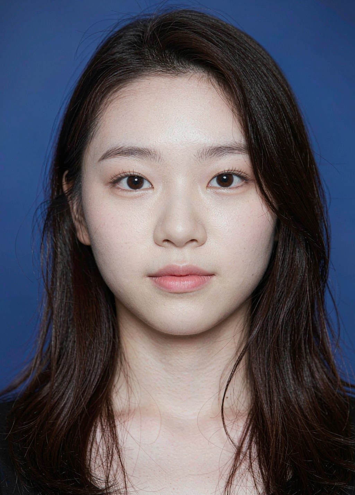
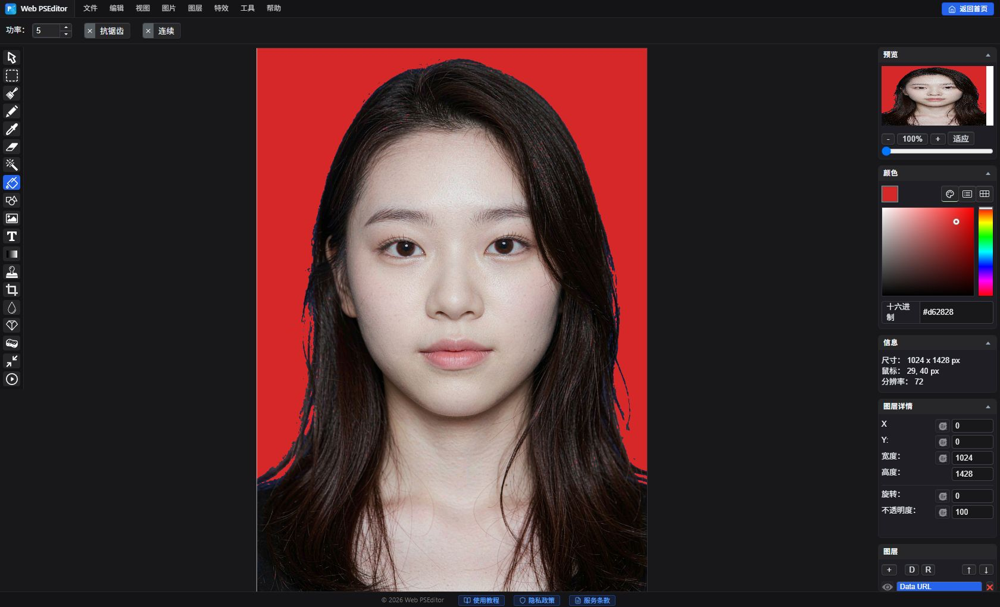

实战教程：如何在线将证件照白底换成蓝底/红底
在日常求职、考试报名或办理证件时，我们经常遇到手头只有白色底色照片，而报名系统明确要求提交蓝底（或红底）照片的情况。去照相馆费时费力，安装庞大的 专业修图软件 更是繁琐。本文将指导你使用免费在线修图工具 Web PSEditor，只需简单的 4 个步骤快速更换底色，全程本地运算，照片绝不上传。


标准证件照常见背景色参考：
- 标准蓝底：RGB(67, 142, 219) 或十六进制
#438EDB（常用于毕业证、工作证、简历、驾照） - 标准红底：RGB(255, 0, 0) 或十六进制
#FF0000（常用于保险、医保、重要认证） - 白底照片：RGB(255, 255, 255) 或十六进制
#FFFFFF（常用于护照、身份证、签证）
进入 Web PSEditor 编辑器首页，点击顶部菜单 【文件】 -> 【打开】（或快捷键 Ctrl + O），选择你电脑中的证件照导入；也可以直接将图片文件拖放到画板中间。
在左侧工具栏选 魔术橡皮擦工具，顶部参数里的 功率（Power） 就是容差，默认 15。先在背景最干净的地方点一下——同色像素立刻变透明，画布透出的棋盘格就是擦掉了。
两个参数决定这一下是干净还是毁图：功率调到 25 ~ 40 才能吃到背景的暗角；Contiguous 默认关闭，意味着它会清掉整个图层里所有相同颜色，而不仅是你点的那片连通区域。证件照的浅色衬衫如果接近背景色，先把功率压到 10 ~ 15 再点，避免肩膀被一起擦穿。
这个编辑器没有羽化功能，也没有羽化半径可填——想要软边只能换做法：
① 保持魔术橡皮擦的抗锯齿默认开启，它本身就会把边界软化一像素，大致等于 1 px 羽化的效果；
② 发际线残留一圈旧底色时，把功率降到 10 ~ 12 再点一次，而不是调高功率（调高会啃进头发）；
③ 还有残留就换橡皮擦，小笔刷、200% 缩放，沿轮廓慢慢刷。
背景擦干净后，先垫一层底色：【图层】→【新建】 建一个新图层，再用 【图层】→【移动】→【向下】 把它压到人物下面。把颜色设成目标色值（如标准蓝底 #438EDB），选填充工具在透明区域点一下，新底色就出现在人物背后，人物本身一个像素都没动。
尺寸不对先改尺寸：【图片】→【调整大小】，宽度填 295、高度自动按比例算，需要 413 × 579 时同理。
最后 【文件】→【导出】，选 JPG（质量 90 以上，报名系统普遍只认 JPG）或 PNG 存到本地。

- 发际线没处理 —— 少了那一像素的抗锯齿过渡，头发与新底色的交界会出现"贴纸感"硬边，只能靠低功率补点或橡皮擦补救。
- 背景有阴影时功率给太低 —— 部分旧背景没被擦掉，垫上新底色后残留一圈灰边。分区域多点几次、局部把功率提到 40 左右，别一次性拉满。
- 底色凭肉眼挑 —— 考试和签证系统会校验背景色值，务必使用上文列出的标准色号，不要随手吸色。
常见问题 FAQ
换底色后头发边缘会出现白边吗？
先看步骤 3：这里没有羽化，靠的是抗锯齿加上低功率二次点击。仍有白边就把功率降到 10 ~ 12 点一次发际线，或者换小笔刷橡皮擦在 200% 缩放下手动收边。
蓝底可以换成护照要求的白底吗？
完全可以，流程一样：魔术橡皮擦擦掉蓝底 → 新建图层压到底层 → 填入 #FFFFFF → 调整到 295 × 413 → 导出 JPG。
最终照片的尺寸和分辨率有要求吗？
多数报名系统要求一寸 295 × 413 像素或二寸 413 × 579 像素、300 DPI。导出前用 【图片】→【调整大小】 精确设置即可。
我的证件照会被上传到服务器吗？
不会。Web PSEditor 通过 HTML5 Canvas 在你本机浏览器内存中完成全部处理——零上传、零云端存储，断网也能用。
相关教程推荐
Web PSEditor 所有图像处理全部在您本机的浏览器内存中通过 HTML5 Canvas 完成，零数据上传、零云端存储，您的私人肖像照片绝不会泄漏，安全合规。
无需安装软件，立即在浏览器中应用本篇所学技巧，纯本地处理无隐私泄露风险。